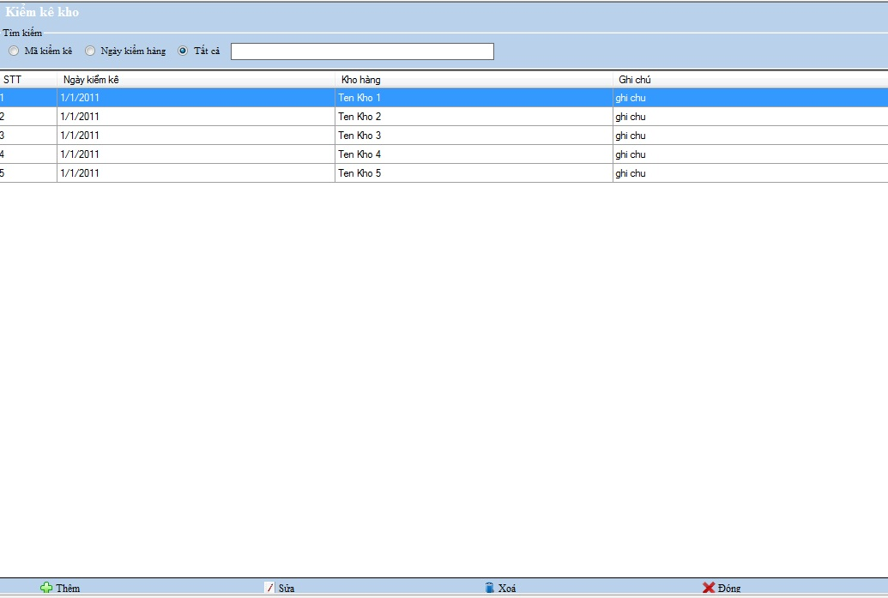

Cách thao tác với Nghiệp vụ quản lý kiểm kê kho:
Vào Hệ thống -> Nghiệp vụ kiểm kê kho

Thanh tiêu đề: Chứa tên của danh mục đang làm việc.
Tìm kiếm: Chọn loại muốn tìm kiếm , bạn nhập vào tên hàng cần tìm .
Thanh công cụ : Chứa các công cụ phục vụ việc quản lý,theo dõi, bổ sung kiểm kê kho
a.Thêm mới
Chọn nút thêm và khai báo các thông tin trên hộp thoại xuất hiện .

- Nhập đầy đủ thông tin vào các ô trống bên trên
- Ở ô trống bên dưới , bạn nhấn F4 để chọn Hàng hóa ,quét mã vạch hoặc nhập mã hàng hóa ,thông tin của hàng hóa đó sẽ được hiển thị lên các ô trống bên cạnh sau khi bạn nhập mã hàng hóa.
- Kích đúp nút thêm bên cạnh các ô thông tin hàng hóa
- Thêm hàng hóa thành công vào Kiểm kê kho ,sẽ có hàng hóa được hiển thị phía dưới
- Thêm thành công hàng hóa, thông tin thanh toán tổng giá trị của các mặt hàng sẽ hiển thị các ô bên dưới.
- Kích đúp chọn nút Thêm ở menu dưới để hoàn tất giao dịch .
Điền thông tin của danh mục theo hướng dẫn,những ô bắt buộc phải nhập nếu bạn để trống hệ thống sẽ báo lỗi như hình sau:

Chọn Thêm để chấp nhận thêm mới
b.Sửa
Chọn hàng cần sửa và đúp chuột vào nút Sửa ở thanh công cụ dưới hoặc kích đúp vào Tên kho hàng hiện thời, hộp thoại sẽ xuất hiện và sửa lại thông tin cho hàng đang chọn.
- Nhập dữ liệu vào ô cần sửa trên nghiệp vụ kiểm kê kho
- Chọn nút Sửa ở thanh công cụ dưới để hoàn thành thao tác .
c.Xóa
Chọn hàng cần xóa và đúp chuột chọn nút Xóa .
- Chọn Trở về ở thanh công cụ dưới để trở về quản lý kiểm kê kho.